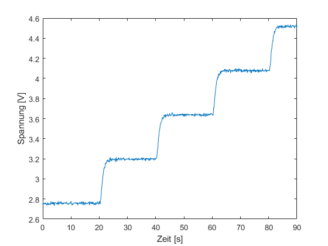
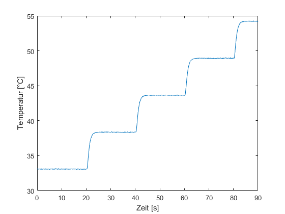
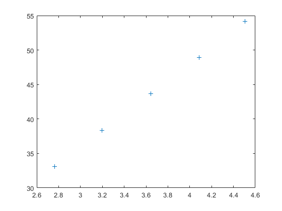
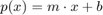
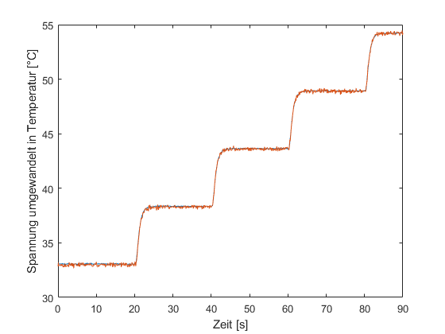

Contents
% Arbeitsauftrag 3 % Bestimmung der Sensorkennlinien % Erstellt am 18.05.2020 % Author: Arnulf Mittelstädt, Dimitri Dening % Praktikumsgruppe: 4
close all % schließt alle offenen figures clear all % löscht alle Variablen im Worcspace clc % löscht das Command Window
Starten der Simulations
sim('Modell_der_Heizstrecke_s');
Grafische Darstellung der Simulationsergebnisse
figure, plot(tout, yout(:,1)); xlabel('Zeit [s]'); ylabel('Spannung [V]'); figure, plot(tout, yout(:,2)); xlabel('Zeit [s]'); ylabel('Temperatur [°C]'); 
Auswahl der Werte für die Bestimmung der Sensorkennlinie
spannung = [yout(100,1), yout(300,1),yout(500,1),yout(700,1),yout(900,1)];
temperatur = [yout(100,2), yout(300,2),yout(500,2),yout(700,2),yout(900,2)];
plot(spannung, temperatur, '+');
 Bestimmung der Sensorkennlinie
sensorkennlinie = polyfit(spannung, temperatur, 1);
Erproben der Sensorkennlinie
figure, plot(tout, yout(:,2)); xlabel('Zeit [s]'); ylabel('Temperatur [°C]'); hold on;
Überprüfung der ermittelten Sensorkennlinie der Form:

plot(tout, sensorkennlinie(1)*yout(:,1) + sensorkennlinie(2)); xlabel('Zeit [s]'); ylabel('Spannung umgewandelt in Temperatur [°C]'); hold off;